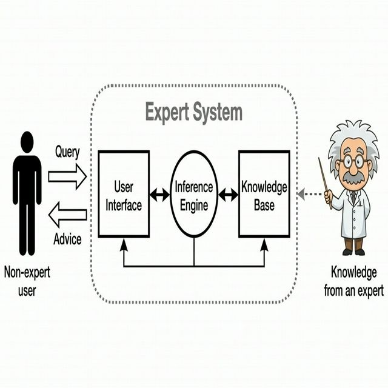

Expert Systems & Prolog
An expert system is a computer program that emulates the decision-making ability of a human expert. It uses a set of rules and facts to solve complex problems within a specific domain. We use declarative languages like Prolog to build these systems.
Learning Objectives
- 12.5.1.2 Create a simple expert system using Prolog

Conceptual Anchor
The Doctor's Flowchart
Imagine a doctor who follows a decision flowchart: "Does the patient have a fever?" → YES → "Is there a rash?" → YES → "Likely measles." An expert system works exactly like this — it stores rules written by real experts, then asks questions and uses logic to reach a conclusion. The computer doesn't "understand" medicine — it just follows the expert's rules.
Expert Systems Theory
Core Components
| Component | Role |
|---|---|
| Knowledge Base (KB) | Stores absolute facts and rules (IF-THEN statements) provided by a human domain expert. |
| Inference Engine | The "brain" of the system. It processes the rules, applies logic to the facts in the KB, and deduces new information or conclusions. |
| User Interface (UI) | Allows the user to interact with the system, input data (answer questions), and receive the final recommendations. |
| Explanation Facility | Explains how a conclusion was reached (showing the rules triggered) and why a specific question is being asked. |
Reasoning Methods (Chaining)
1 Forward Chaining (Data-Driven)
Starts from known facts and applies rules to derive new facts until a conclusion or goal is reached. It answers the question: "What can I conclude from this data?"
Known facts: patient_has_fever, patient_has_rash
Step 1: Rule 1 (IF fever AND rash THEN measles) fires.
Step 2: New fact derived → patient_has_measles.
Result: "The patient has measles."2 Backward Chaining (Goal-Driven)
Starts from a hypothesis (goal) and works backward to check if the facts in the Knowledge Base support it. It answers the question: "Is this hypothesis true?"
Hypothesis: Does the patient have measles?
Step 1: System checks Rule 1 (Requires: fever AND rash).
Step 2: System searches KB for "fever" → Found ✓
Step 3: System searches KB for "rash" → Found ✓
Result: "Yes, the hypothesis is true."Advantages & Disadvantages
| Advantages | Disadvantages |
|---|---|
| Available 24/7 and never suffers from fatigue. | Cannot learn from experience — only knows the rules it was explicitly given. |
| Provides consistent answers; the same input always gives the same output. | Lacks "common sense" and cannot handle situations outside its narrow domain. |
| Preserves highly specialized expert knowledge even after the human expert retires. | Expensive and time-consuming to build, update, and maintain the Knowledge Base. |
Implementing with Prolog
Prolog (Programming in Logic) is a declarative language perfectly suited for building the Knowledge Base and Inference Engine of an expert system.
Prolog Syntax Rules
| Concept | Syntax Rule | Example |
|---|---|---|
| Atoms (Constants) | Must start with a lowercase letter. Represents specific, known objects or relationships. | john, male, parent |
| Variables | Must start with an Uppercase letter (or underscore). Acts as a placeholder for any atom. | X, Person, Child |
| Facts | Unconditional statements of truth. Must end with a full stop . |
male(john).parent(john, mary). |
| Rules | Conditional statements. :- means IF. , means AND.
; means OR. Must end with a full stop.
|
father(X,Y) :- male(X), parent(X,Y). |
| Queries | Questions asked to the Inference Engine to test a hypothesis. | ?- father(john, mary). |
Building a Family Tree Expert System
We can define a Knowledge Base using a family tree diagram, and then write Rules to let the Inference Engine deduce complex relationships.
% KNOWLEDGE BASE: FACTS
male(charles).
male(william).
male(harry).
female(diana).
parent(charles, william).
parent(diana, william).
parent(charles, harry).
parent(diana, harry).
% KNOWLEDGE BASE: RULES
% "X is a mother of Y IF X is female AND X is a parent of Y"
mother(X, Y) :- female(X), parent(X, Y).
% "X is a sibling of Y IF Z is a parent of X AND Z is a parent of Y AND X is not Y"
sibling(X, Y) :- parent(Z, X), parent(Z, Y), X \= Y.
% "X is a brother of Y IF X is male AND X is a sibling of Y"
brother(X, Y) :- male(X), sibling(X, Y).
% INFERENCE ENGINE / QUERIES
?- mother(diana, william).
% Output: true (Backward chaining confirms the facts)
?- brother(X, william).
% Output: X = harry (Engine searches for X that satisfies male and sibling)Common Pitfalls
Expert Systems ≠ Machine Learning
Expert systems use hand-written rules programmed by humans. Machine learning algorithms learn patterns from training data autonomously. An expert system will never improve unless a programmer manually adds new rules.
Variables vs Atoms in Prolog
Remember: john is a specific person (Atom). John is an unknown variable
(because of the capital 'J'). If you write male(John)., you are telling Prolog
"Every possible thing is male", not "the specific person john is male".
Tasks
Name the four main components of an expert system and describe the role of each.
Explain the difference between forward chaining and backward chaining. Which one starts with a hypothesis?
Given the facts parent(X,Y), write a Prolog rule to define
grandparent(X,Z).
Compare expert systems with machine learning. In what critical situations (e.g., medicine) might an expert system with an Explanation Facility be preferred over a "black box" ML model?
Self-Check Quiz
Q1: What is the purpose of the Explanation Facility?
Q2: What does the symbol :- mean in a Prolog rule?
Q3: If you want to check if X and Y are both true in Prolog, which operator do you use?
, which represents the logical AND operator.